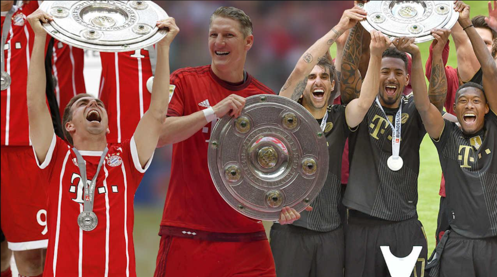
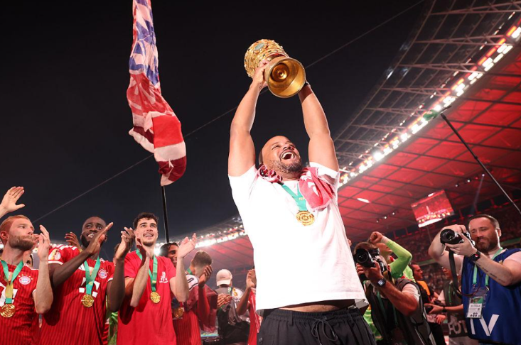
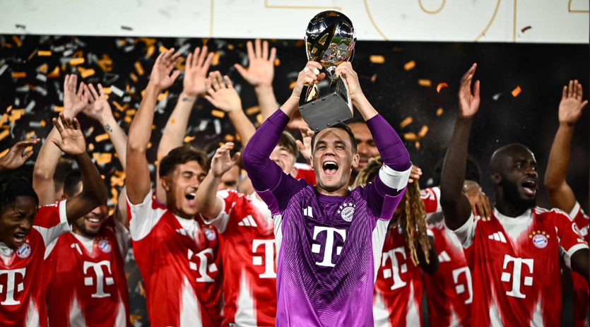
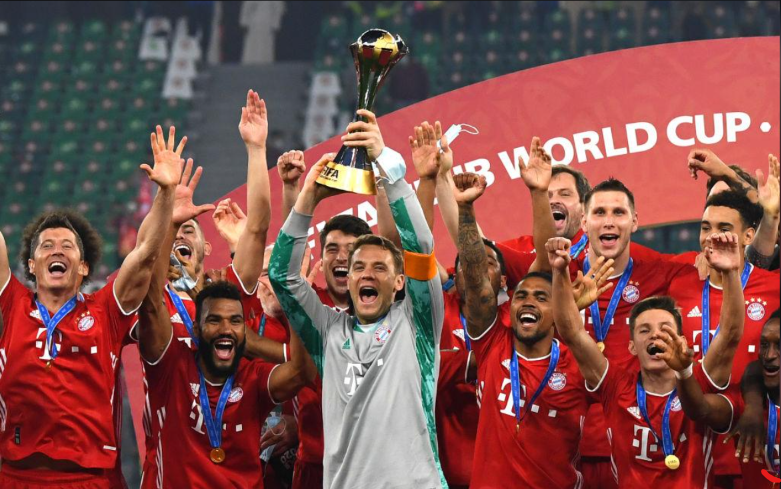
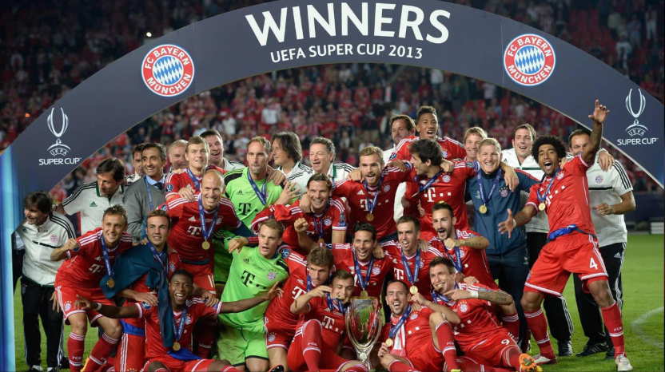

THE PRIDE OF MUNICH
A history of excellence, dominance, and unforgettable victories.

Bayern's incredible record in German domestic football.

One of Germany's most successful cup teams.

Six European crowns, among the greatest achievements in football.

Bayern's success in Germany's annual season-opening competition.

World champions in 2013 and 2020.

European Super Cup winners in 2013 and 2020.